| 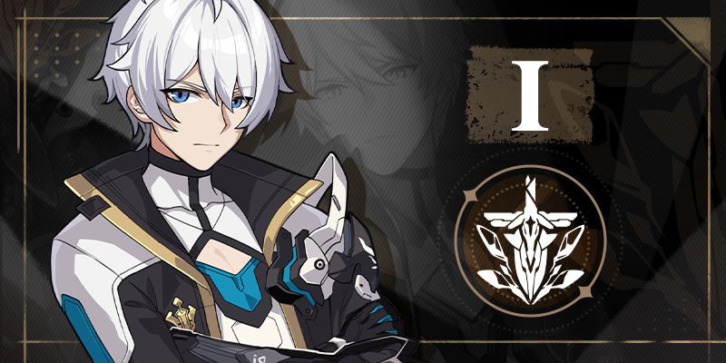 |
Kevin
"I am Kevin, a soldier signeted with Deliverance. There is nothing more to me."
The bygone legends need no retelling. A hero recognized by all, he was the closest to the MOTHs' grand design.
Everyone believed he would lead humanity to overcome Honkai.
|
| 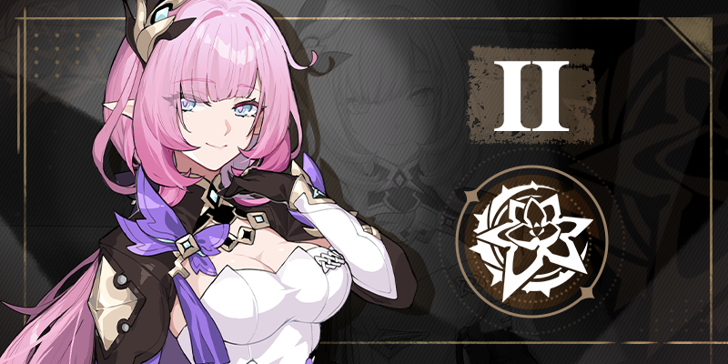 |
Elysia
"As you can see, this girl as pretty and sweet as a flower is the commander who is only second to Kevin."
A carefree and uninhibited girl who acts nothing like the second-in-command. The other leader of the Flame-Chasers.
To spark or lose her interest is a reward in itself.
|
| 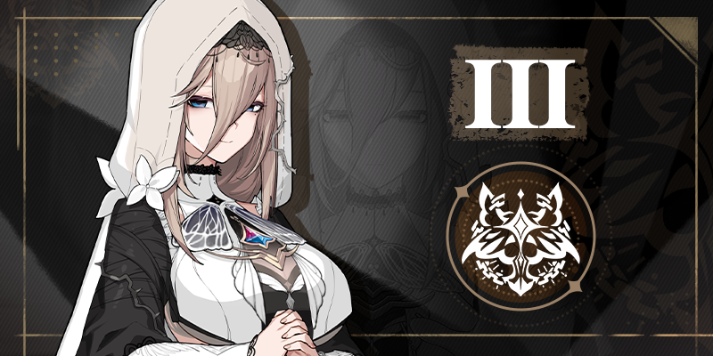 |
Aponia
"What has been said is true: everything humanity feared was brought by me and realized by me. For which, fate is not to blame. I know my sin, and my sin precedes me."
Unbeknownst to them, they are bound together by the strings of fate.
The strings guide life to emerge in a wailing; The strings hold souls to depart in silence.
The end is decided, as Aponia has seen in her grave; The cage is raised, and it holds Aponia alone.
|
| 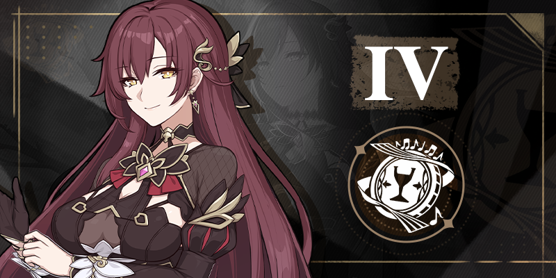 |
Eden
"My song has ended with my era. May your future be sung forever."
She was the glamorous star who had the world at her feet until that fire engulfed everything.
She had not stopped singing in the end time as a final attempt to remind people of the golden age.
|
| 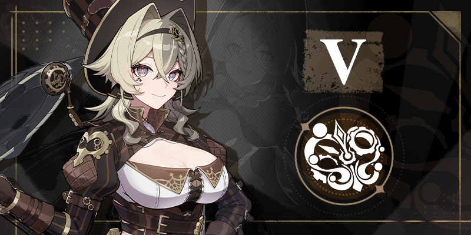 |
Vill-V
"Yep, that's me! I'm the youngest master of Helixcraft, the inventor of the Kevin Killer, the wizardry king of the dusk era,
the one looking down upon the stars, and the mother of marvelous junk, Vill-V!"
Vill-V in life is passionate about performing her beloved magic of gear movement, which unfolds the curtains on the stage
with steam evaporating and audiences applauding.
As the engineer consultant to Flame-Chasers, she ushered in the Helix of "common sense" and "anti-common sense", but it attracted praises and doubts as much a division as different colors of her hair did.
|
| 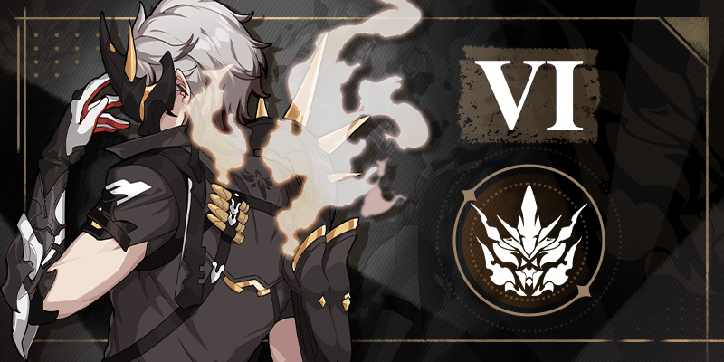 |
Kalpas
"Enemies? Kill. Obstacles? Kill. Risks? Kill. Anything unwanted, kill...!"
A man who hid his face behind a dark mask and was sometimes referred to as Asura. Another member of the covert troop Cocoon.
He only ranked six due to his violent and intractable nature that his colleagues found disagreeable.
|
| 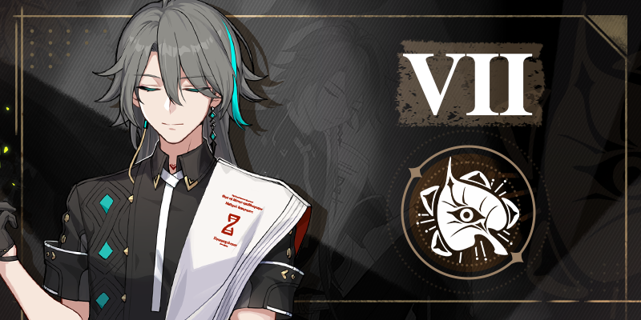 |
Su
"I am only a spectator. You are aware of where the path will lead you to."
Once a doctor in the secular world, his altruism awakened him.
Having perceived three thousand realms, this meditating sage would one day become the empowerment of Bodhi.
|
| 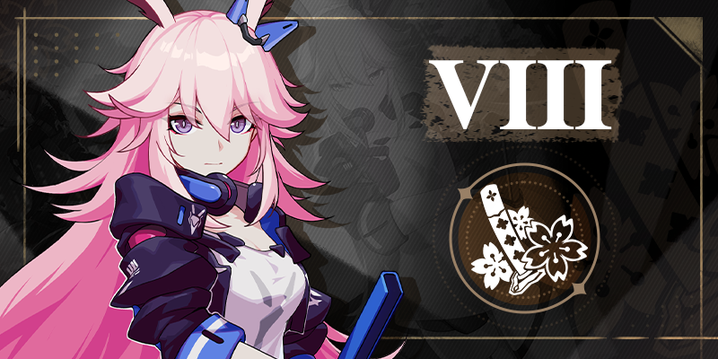 |
Sakura
"I am Kevin, a soldier signeted wit"Who shows mercy to an enemy denies it to themselves. However... you must know who your true enemy is."
The crumbling of her homeland and a secret transaction made her a moth.
As a member of the covert troop Cocoon, she lived a life in the shadows, like a blade pointed at the most special of enemies.
|
| 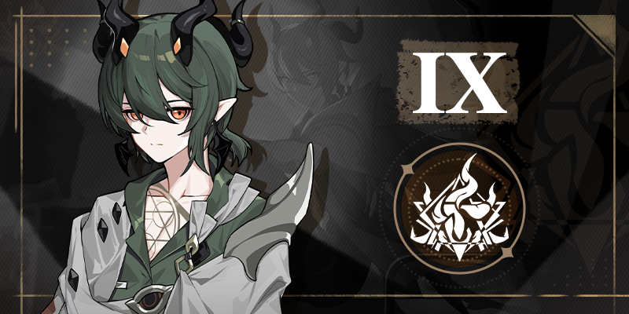 |
Kosma
"I can't give you guidance, unless you want lessons from a failure. [Daybreak] stems from endless dead ends... that's just how it is."
Time has left three shadows behind Kosma: a child, a teenager, and a hero.
His childhood has long passed and his dream of becoming a hero cannot come true.
In the long night, a boy named Kosma travels alone. Just like daybreak, he awaits sunrise.
|
| 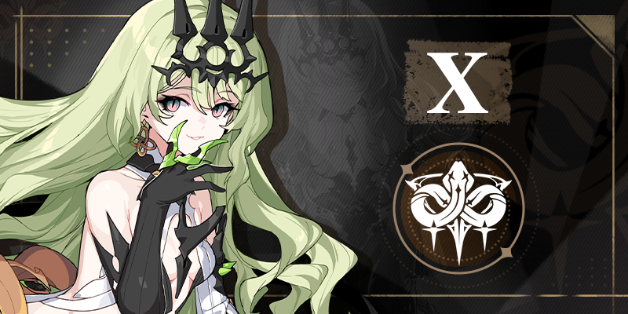 |
Mobius
"Evolution is not a beautiful process. On the contrary, it is ugly, and extremely so.
But only through this ugly process can we truly understand... the beauty of life."
Like her bottomless snake eyes, her true colors were also an enigma.
Her eyes had witnessed the coming of Honkai time and time again. On the path of evolution, she would sacrifice anything to seek the truth.
|
| 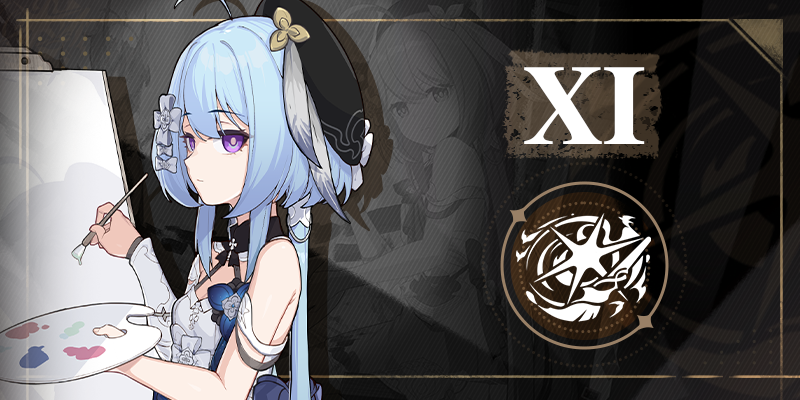 |
Gresio
"Paint with me. That way, they're your friends too. What do you like? A sailboat under the sea, or a crab in the clouds?"
Griseo expresses herself with a paintbrush and has her heart in the world of colors.
A scroll of painting supports Griseo and her world. Colors of the past spread across the ash gray into the end of a silver sea.
|
| 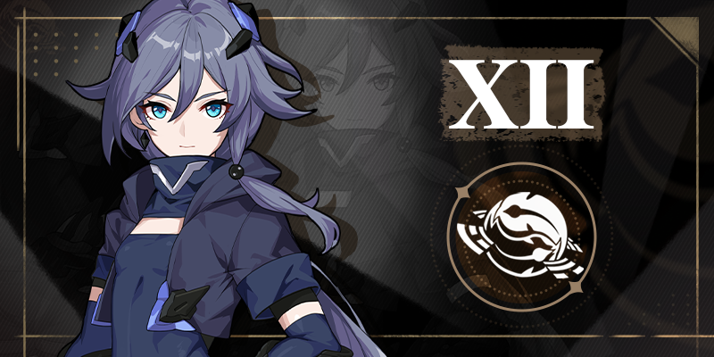 |
Hua
"I am still myself. Before I become my future self, there is a long way I must walk. There is only one kind of fate, and it cannot be bypassed."
A quiet young soldier. The girl was still immature and insecure, unaware of her turbulent future.
She was a fledgling that lost her way in and did not know the way out.
|
| 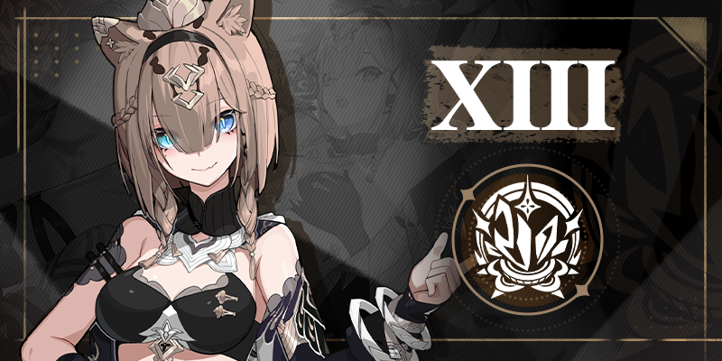 |
Pardofelis
"Peeps don't usually call me by my full name. Some prefer Felis, some prefer Pardo, fine by me. After all, unlike Kalpas and Mobius, I'm a laid-back soul!"
Life is but a game of randomness. A gamble and an overdraft reformed her and sent her on this quest.
As the last of the thirteen Flame-Chasers, she claims her status and strength are worlds apart from the other twelve.
|